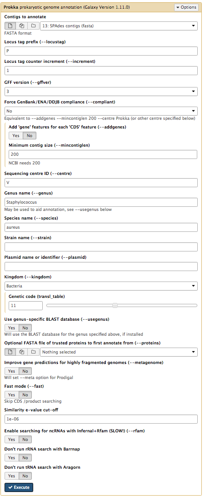
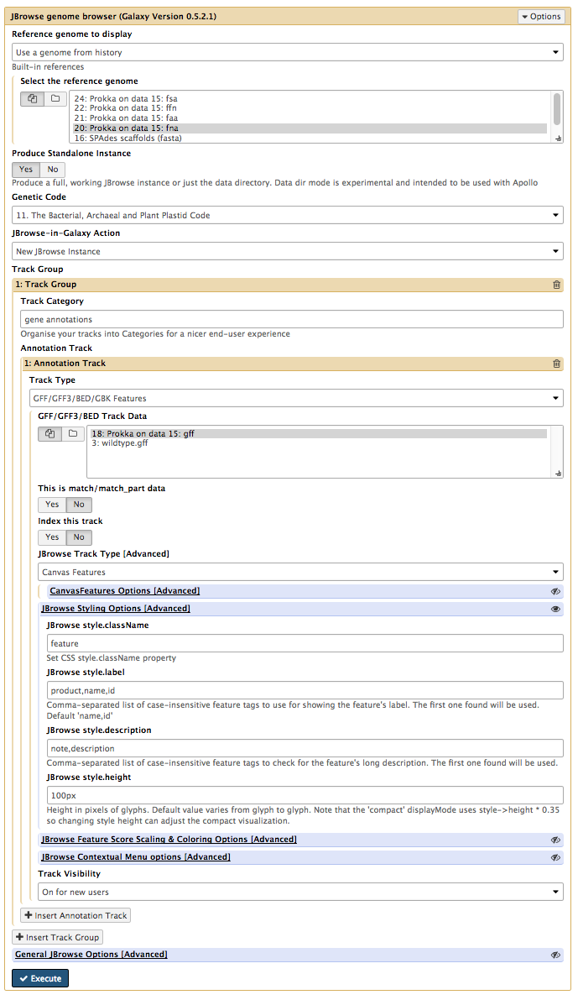
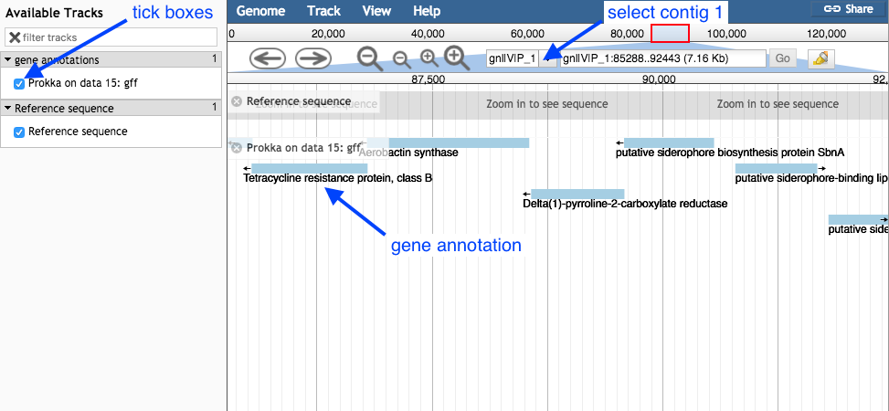
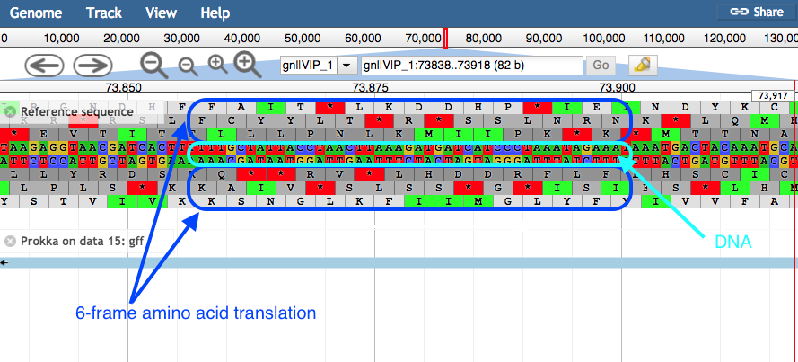

Genome annotation using Prokka
Keywords: annotation, Prokka, JBrowse, Galaxy, Microbial Genomics Virtual Lab
Background
In this section we will use a software tool called Prokka to annotate the draft genome sequence produced in the previous tutorial. Prokka is a “wrapper”; it collects together several pieces of software (from various authors), and so avoids “re-inventing the wheel”.
Prokka finds and annotates features (both protein coding regions and RNA genes, i.e. tRNA, rRNA) present on on a sequence. Note, Prokka uses a two-step process for the annotation of protein coding regions: first, protein coding regions on the genome are identified using Prodigal; second, the function of the encoded protein is predicted by similarity to proteins in one of many protein or protein domain databases. Prokka is a software tool that can be used to annotate bacterial, archaeal and viral genomes quickly, generating standard output files in GenBank, EMBL and gff formats. More information about Prokka can be found here.
Learning objectives
At the end of this tutorial you should be able to:
- load a genome assembly into Prokka
- annotate the assembly using Prokka
- examine the annotated genome using JBrowse
Input data
Prokka requires assembled contigs.
-
If you are continuing on from the previous workshop (Assembly with Spades), this file will be in your current history:
SPAdes_contigs.fasta . -
Alternatively, get the file called “assembled contigs” from the Training dataset page.
Run Prokka
- In Galaxy, go to
Tools → NGS Analysis → NGS: Annotation → Prokka - Set the following parameters (leave everything else unchanged):
Contigs to annotate :SPAdes contigs (fasta) Locus tag prefix (–locustag) : PForce GenBank/ENA/DDJB compliance (–compliant) : NoSequencing Centre ID (–centre) : VGenus Name : StaphylococcusSpecies Name : aureusUse genus-specific BLAST database No
Your tool interface should look like this:

- Click
Execute
Examine the output
Once Prokka has finished, examine each of its output files.
- The
GFF andGBK files contain all of the information about the features annotated (in different formats.) - The
.txt file contains a summary of the number of features annotated. - The
.faa file contains the protein sequences of the genes annotated. - The
.ffn file contains the nucleotide sequences of the genes annotated.
View annotated features in JBrowse
Now that we have annotated the draft genome sequence, we would like to view the sequence in the JBrowse genome viewer.
-
Go to
Statistics and Visualisation → Graph/Display Data → JBrowse genome browser . -
Under
Reference genome to display choose Use a genome from history. -
Under
Select the reference genome chooseProkka on data XX:fna . This .fna sequence is the fasta nucleotide sequence, and will be the reference against which annotations are displayed. -
For
Produce a Standalone Instance select Yes. -
For
Genetic Code choose 11: The Bacterial, Archaeal and Plant Plastid Code. -
Under
JBrowse-in-Galaxy Action choose New JBrowse Instance. -
Click
Insert Track Group -
Under
Track Category type in gene annotations. -
Click
Insert Annotation Track -
For
Track Type choose GFF/GFF3/BED/GBK Features -
For
GFF/GFF3/BED Track Data selectProkka on data XX:gff [Note: not wildtype.gff] -
Under
JBrowse Track Type[Advanced] select Canvas Features. -
Click on
JBrowse Styling Options -
Under
JBrowse style.label check it says product,name,id. -
Under
Track Visibility choose On for new users.
Your tool interface should look like this:

-
Click
Execute -
A new file will be created, called
JBrowse on data XX and data XX - Complete . Click on the eye icon next to the file name. The JBrowse window will appear in the centre Galaxy panel. -
Under
Available Tracks on the left, tick the box forProkka on data XX:gff . -
Select contig 1 in the drop down box. You can only see one contig displayed at a time.

-
Use the plus and minus buttons to zoom in and out, and the arrows to move left or right (or click and drag within the window to move left or right).
-
Zoom in to see the reference sequence at the top. JBrowse displays the sequence and a 6-frame amino acid translation.
Zoomed in view:

- Right click on a gene/feature annotation (the bars on the annotation track), then select
View Details to see more information.- gene name
- product name
- you can download the FASTA sequence by clicking on the disk icon.